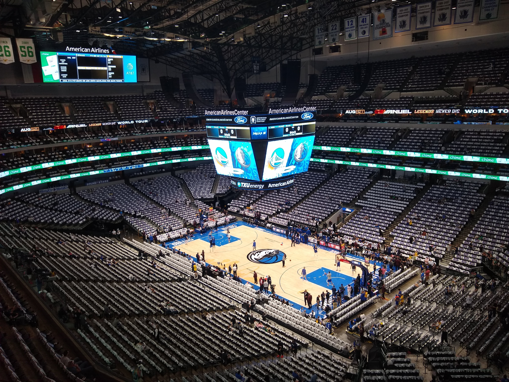
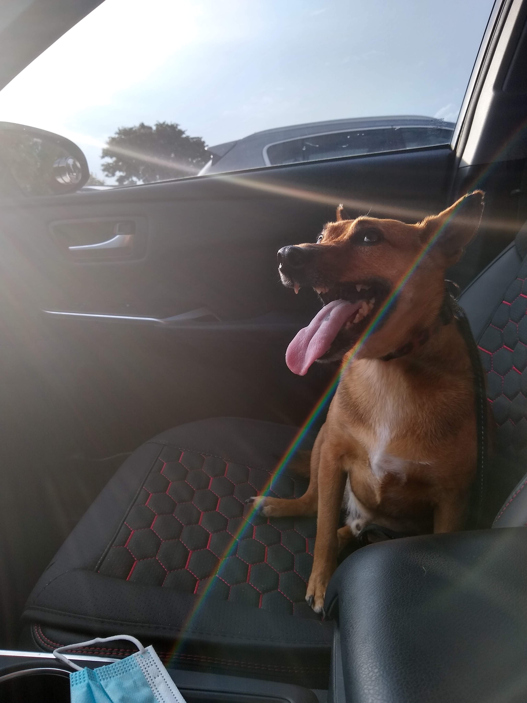

About Me

Howdy! My name is Joshua Yan.
I’m a senior at Texas A&M University, planning on graduating in Spring of 2024 with a B.S. in Computer Engineering.
I have a strong background in STEM via school coursework in fields such as mathematics, computer science, and electrical engineering, as well as through my Summer 2023 internship at Hewlett Packard Enterprise, where I learned to apply my skills and how to work in a high level professional environment.
Outside of school and work:
- I've been to 14 countries, and enjoy traveling and experiencing the world.
- I like to dance! I'm the president of FUSD, a street dance club at Texas A&M. We host community dance events such as workshops and dance battles, perform for various audiences, and travel to compete at events around Texas. Check out one of my highlight reels below!
- I'm a fan of the Dallas Mavericks, and I've been to many games; witnessing a Dirk Nowitzki game winner in person was a core memory of mine. 
- I have a Shiba-Inu Chihuaha mix named Trooper. 
- I love trying new foods and also do my best to hone my own cooking skills in the kitchen.
Contact me at wsjoshua02@gmail.com, and feel free to check out what I've done, what I'm up to, and even what I listen and jam out to!